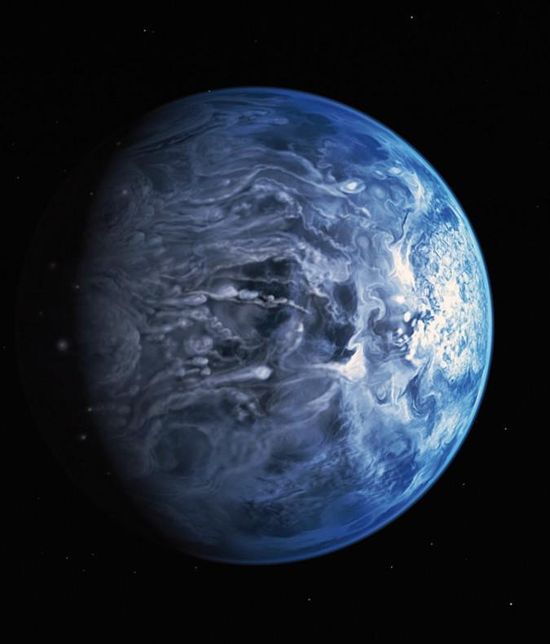

Curiosidades

1. Espaço: Olhar para objetos distantes é olhar para o passado, pois a luz leva tempo para chegar até nós.

2. Júpiter: Sua Grande Mancha Vermelha é uma tempestade gigantesca que poderia engolir a Terra.

3. HD 189733 b: Nesse exoplaneta, pode chover partículas de vidro sopradas por ventos extremos.

Anéis de Saturno: São formados por incontáveis partículas de gelo, poeira e rocha.